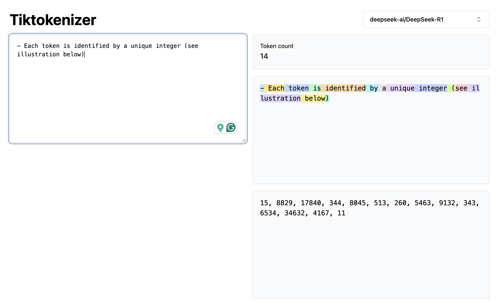
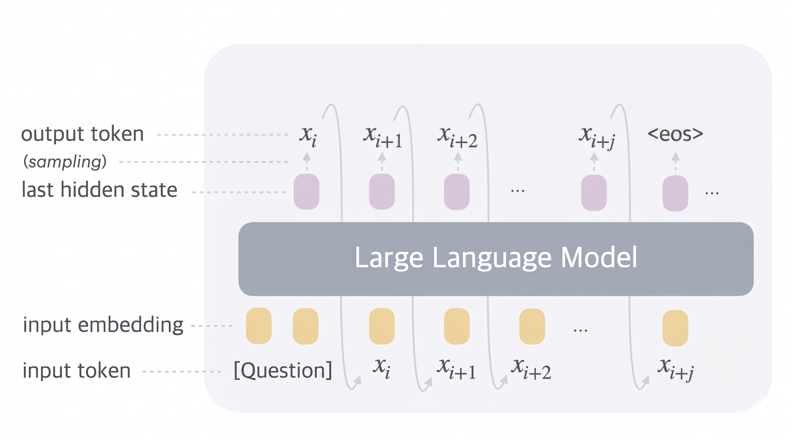
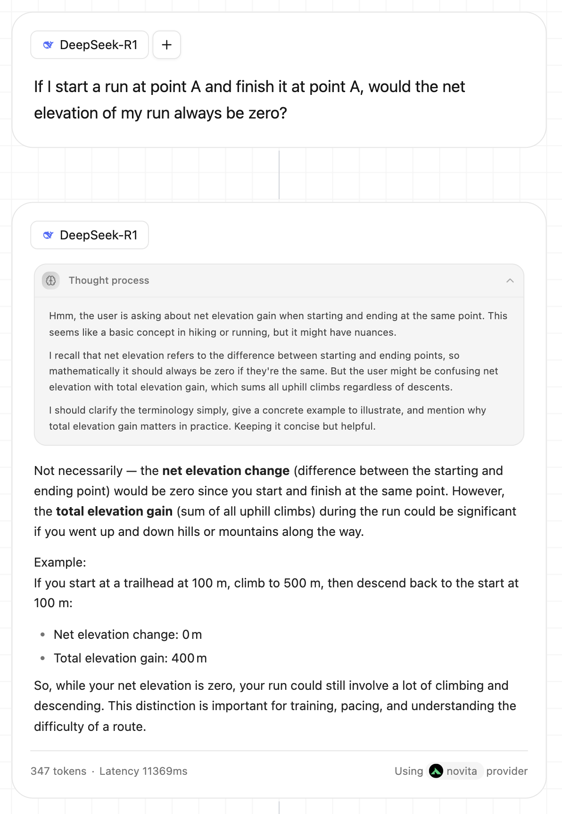
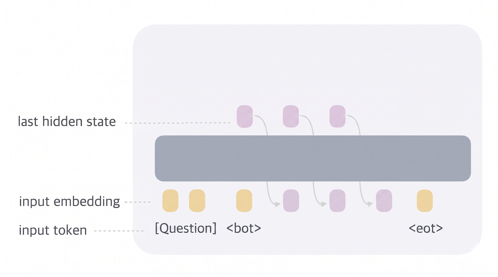

Discrete and continuous thinking in LLMs
The adjectives discrete and continuous are used to describe processes. A discrete process evolves in a countable, separable sequence of distinct terms. By contrast, a continuous process evolves smoothly without gaps, and its states flow into each other with no recognizable gaps.
Population growth is a discrete process. You either have 8'300'000'000 or 8'300'000'001 humans, there's no in-between. Conversely, the flow of the ocean is a continuous process.
The two processes can co-exist. In a CPU, the energy voltage flows continuously on every wire, while the output computation evolves discretely: at each clock cycle, the machine is in exactly one well-defined state.
More generally, states of discrete processes are described via integers $\mathbb{Z}$, while states of continuous processes are described via reals $\mathbb{R}$.
Italo Calvino, in his essay Cybernetics and Ghosts from 1968, describes a shift, triggered by the works of Shannon, Wiener, von Neumann, and Turing, that altered our mental models toward a discrete interpretation of the world.
Thought, which until the other day appeared to us as something fluid, evoking linear images such as a flowing river or an unwinding thread, or else gaseous images such as a kind of vaporous cloud-to the point where it was sometimes called "spirit" (in the sense of "breath")-we now tend to think of as a series of discontinuous states, of combinations of impulses acting on a finite (though enormous) number of sensory and motor organs. Italo Calvino, Cybernetics and Ghosts
The 19th-century romantic view of reality as a process that flows, condenses, and disperses like weather was undermined by Watson and Crick's discoveries in biology, which showed how the endless variety of living entities can be obtained by combining four nucleotide bases in a sequence.
The process going on today is the triumph of discontinuity, divisibility, and combination over all that is flux, or a series of minute nuances following one upon the other. Italo Calvino, Cybernetics and Ghosts
As a writer himself, Calvino turned his attention to the source of his living: the most complex and unpredictable of all human machines: language.
The Soviet mathematician Andrey Kolmogorov, in the 60s, conducted studies to evaluate the entropy of human language. Volunteers were shown a cropped fragment of Russian text and asked to predict the next word, then the next, given the correct answer to the previous one, and so on. Kolmogorov A/B tested this on poetry and on Soviet political newspapers. The results showed that political prose was substantially more predictable than poetry. Despite the constraints of meter and rhyme, poetry has higher entropy and, therefore, based on Shannon's definition, is informationally richer than the unconstrained editorial prose.
At the same time, a group of writers and mathematicians was founded in Paris under the name Oulipo (Ouvroir de littérature potentielle). As a founding member of that group, Raymond Queneau created a writing machine able to produce a hundred thousand billion sonnets as a combination of ten initial sonnets that he personally wrote and fed as input to the machine.
The common element across these groups was the discretization of language, now interpreted as a combination and permutation of finite quantities. The threat of generative machines, built on combinatorial and probabilistic math, replacing humans was already present eighty years ago.
Will we also have machines capable of conceiving and composing poems and novels? Italo Calvino, Cybernetics and Ghosts
Instead of drawing the obvious analogy between Calvino's predictions and the evolution of today's LLMs, I prefer to analyze the difference between two complementary processes: thinking and communicating.
As I sit at my desk, my thinking process is a mess; it's a bunch of not-so-well-connected thoughts about this article floating around my mind. There's also a series of internalized heuristics and mental models that are contributing to the process.
On the other side, there's the communication process, constrained by the 26 letters of the keyboard sitting in front of me. The messy thinking has to be distilled into a sequence of words, chosen one after the other, just as a CPU converts a continuous voltage into discrete binary states.
The thinking process is vast, messy, unordered, unconstrained, lawless, and continuous. The communication is compressed, ordered, constrained, combinatorially limited, rule-based, and discrete.
So what is language for? If we agree with Kolmogorov and Queneau's discrete interpretation of language, we should associate the language with the discrete process of communicating. In practice, the difference is not so clear: many of us associate the act of thinking with an inner voice that communicates to us via human language.
Surprisingly, neuroimaging research showed that the regions of the brain responsible for language production remain largely inactive when it comes to thinking and reasoning, concluding that human language is a tool optimized for communication (either written or spoken) rather than for reasoning. As additional evidence, the same scientists observed that the ability to complete reasoning tasks, such as solving math problems or playing chess, is not affected in patients who have lost the capacity to process language (due to an injury or stroke), confirming a clear separation between the two processes.
Nevertheless, all existing LLMs use language both for thinking and for communicating, which makes me wonder if we could squeeze more intelligence out of them by enabling a continuous thinking process akin to how humans operate.
Coconut paper from Meta suggests so.
Discrete thinking LLMs
The atomic and discrete units on which LLMs operate are tokens. Tiktokenizer interface helps you visualize how LLMs translate human language into tokens, while Karpathy's lesson walks you through the technical details of tokenization. For the sake of this article, it is sufficient to know that:
- Various models use different tokenizers for optimization purposes
- For a given model, the same sequence of words will always be translated into the same sequence of tokens
- Each token captures a sequence of characters and is identified by a unique integer (see illustration below)

When interacting with an LLM at inference time, the user's question is deterministically translated into an input token sequence, which is then transformed into an embedding vector, which is fed into the neural network to produce a hidden state used to sample the next output token probabilistically. The sampled token is appended to the running input sequence, and the process is repeated until the model samples the <eos> token, which signals that the model has decided there's no more to say.

When we ask an LLM a question, we often see the interface split into two sections: one for the thinking process and one for the final answer.

Notably, proprietary, closed-source models such as Gemini do not show the full thought process but only a summarized version to avoid this being used for model distillation.
In this context, thinking refers to the process, during inference, in which a model produces intermediate reasoning steps before arriving at a final answer. Rather than jumping directly from question to answer, the model writes out something like "First I need to count X, then multiply by Y, which gives...". The emergence of reasoning at inference time is often referred to as Chain of Thought (CoT) and has been shown to produce more accurate outputs. There are three main pathways to achieve CoT:
- Prompting. The model is provided with a few chain of thought examples as part of the prompt (Wei et al. 2022) or simply by telling the model to "think step by step" (Kojima et al. 2022)
- Supervised fine-tuning (SFT). The model is trained with (problem, reasoning_trace, answer) triples (Zelikman et al. 2022)
- Reinforcement learning (RL). The model is trained with verifiable rewards on math/coding tasks without human-in-the-loop (Deepseek R1). Long-form CoT emerges naturally, including self-correction and backtracking (see the famous aha! moment).
While CoT can be achieved through different techniques applied at either training or inference time, all these techniques rely on the same underlying assumption: thoughts are expressed via a sequence of discrete tokens. LLMs are still operating as next-token prediction machines.
In the first example from Deepseek R1, the interface suggests that the thought process and the answer are different beasts. Nevertheless, from the model's point of view, there's no real difference. These are just a bunch of tokens (347, to be precise) generated using the same autoregressive sampling process, and roughly half of them happen to be dedicated to reasoning.
Compared to how the human brain works, LLMs both think and communicate via discrete language-based tokens. All of the available LLMs do that. Intuitively, limiting the thinking process to a bounded and discrete language space should constrain a model's reasoning capabilities. A hint in that direction comes from an underrated finding in Deepseek R1 paper: the Deepseek R1 Zero model, which was trained purely via RL, started mixing languages (Chinese/English/code) during the thinking process. For the sake of interpretability, the R1 version added an SFT stage on top of RL to force the model into a more structured, aligned, and interpretable thinking process. What's most surprising is that R1 Zero performed better than R1 in the CNMO 2024 math benchmark. While both R1-Zero and R1 think via discrete tokens, the better performance of the former model can be interpreted as an effort to free itself from the straitjacket of human language and move toward more abstract symbolic reasoning.
Continuous thinking LLMs
Many would argue that LLMs already think continuously. Indeed, across a vertical pass, the transformation from embedding vector to hidden state operates across vectors of reals $\mathbb{R}^n \rightarrow \mathbb{R}^n$. Although continuous, the process exhausts itself over a single vertical forward pass, since during sampling the large vector of reals decays into a single integer $\mathbb{R}^n \rightarrow \mathbb{Z}$.
Researchers from Meta experimented with a novel horizontal thinking layer, named Chain of Continuous Thought (Coconut), that maintains a continuous representation across consecutive forward passes.

The main feature of Coconut is that there's no token sampling at the end of a forward pass. The thought does not degrade into a lossy single-integer representation via sampling. Instead, the output hidden state from a forward pass is fed back as an input embedding for the next forward pass. This thinking layer lasts for an arbitrary number of passes bounded by the beginning of thought <bot> and the end of thought <eot> tokens. The <eot> token signals the end of the continuous thinking phase, and the model returns to the default discrete autoregressive token-sampling modality.
This architecture, akin to how the human brain works, clearly separates the thinking processes, which operate on continuous vectors $\in \mathbb{R}^n$ across sequential forward passes, from the communication process, which outputs a discrete token $\in \mathbb{Z}$ at each forward pass. The former process does not have to be interpretable by humans, while the second must be interpretable to discern actionable value from the interaction with the LLM.
Providing a model with a portion of unrestricted and latent space for thinking and reasoning improved its performance across various logical reasoning benchmarks. Starting from a pre-trained GPT-2, the authors showed that equipping the model with Coconut capabilities outperforms an equivalent model equipped with CoT capabilities across various logical reasoning benchmarks, including ProntoQA and ProsQA.
The interpretation is that traditional discrete thinking models are forced to commit to a token at every forward pass, therefore orienting their thoughts towards a specific direction. The act of sampling a token from a large probability distribution discards a large amount of information, especially during the thinking phase, when the model might still be uncertain about the direction to take.
Conversely, Coconut postpones the decay moment by updating, at each forward pass, a large vector of reals that encodes a superposition of various thinking directions.
Limitations
Coconut experiment hints at the possibility that better reasoning capabilities can be obtained by freeing LLMs from the constraints of discrete human languages. Nevertheles, the experiment comes with limitations.
I glossed over the description of the training curriculum required to obtain a model capable of thinking in a continuous space. Taking an existing model and just applying the Coconut logic at inference time yields poor results, since the model never learned to process hidden states as inputs to the forward pass.
The training curriculum proposed in the Coconut paper starts with a pre-trained model and fine-tunes it using {question, reasoning, answer} triples while progressively replacing discrete thinking steps with continuous ones. This seems counterintuitive: a model first learns to reason in discrete terms and then is forced to unlearn it in favor of continuous thinking.
The approach shows its limits when scaling the experiment to larger models. When ported to Llama 3.2-3B and 3-8B, the gains in reasoning tasks are less evident. The authors hypothesize that such larger models have already undergone significant discrete-language-focused pre-training and that the transition to continuous thinking is therefore problematic.
Next steps
A significant next step, as envisioned by the authors, would be to eliminate the current retrofitting approach and pre-train directly in the latent space. This leap is not obvious. The training phase requires target ground truth to reduce the model's loss function, but we don't have target ground truth for continuous thinking steps.
A solution in this direction is to distill these target values from a CoT model. But this would still keep us anchored to a model that learned to think using human language-based discrete tokens, thereby maintaining a dependency on a constrained representation of thoughts.
Pham et al. 2024 run a similar experiment by letting agents debate in a continuous space, which confirmed better results across five reasoning tasks. During the debate, models exchange embedding vectors that don't correspond to any specific token. The final response is decoded back into human language using nearest-neighbor decoding of the continuous vectors used to exchange information during the debate.
A more radical approach would be to completely break away from language models and move towards world models, where models can develop reasoning capabilities from the outcomes of actions performed in a world simulation, rather than from language-based and human-biased strings of text.
Lastly, a suggestive idea: the whole article was built on the premise that removing discrete constraints would improve the reasoning capability. An Oulipian would find this statement horrifying. Oulipians believed in the power of strict rules to enhance the creativity of a writer. They theorized a series of constraints to strangle and improve the writing process, such as the lipogram, which forces an author to exclude a letter, and the univocalism, which forces the use of a single vowel. Georges Perec, one of the most eminent member of Oulipo, wrote La Disparition (1969) without the letter "e", while Les Revenentes (1972) used "e" as the only vowel. An experiment, symmetrically opposite to the one explored in the Coconut paper, would be to evaluate the performance of LLMs when the thinking space is further constrained over the discrete axis.